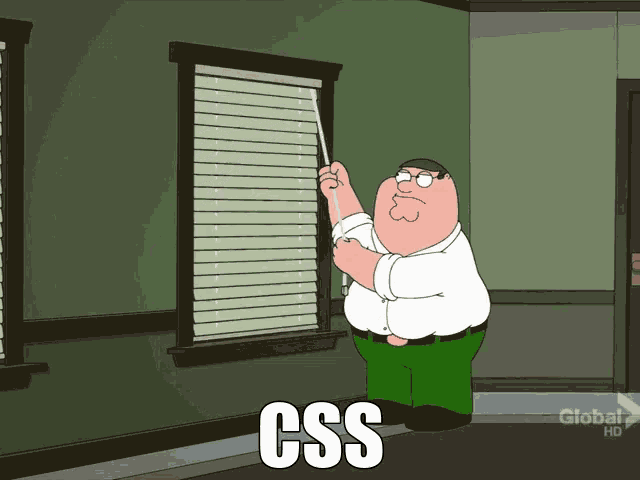
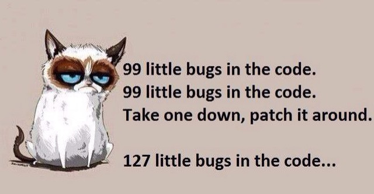

CSS Bayan
Becoming a frontend developer can be really hard...
1. First you struggle with HTML&CSS

2. Then learn JavaScript

3. And when the things start getting better

4. You realise that not everything is so bright how it looked

5. So through the day as a programmer you be like